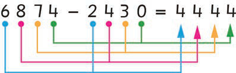

Subtraction of whole numbers without regrouping
Subtracting whole numbers horizontally
Example 1
6874 - 2430 =
Steps
1.
Subtract the ones: 4 - 0 = 4 Write 4 in the ones place.
2.
Subtract the tens: 7 - 3 = 4 Write 4 in the tens place.
3.
Subtract the hundreds: 8 - 4 = 4. Write 4 in the hundreds place.
4.
Subtract the thousands: 6 - 2 = 4 Write 4 in the thousands place.

Therefore, 6874 - 2430 = 4444.
Example 2
46781 - 1041 =
Steps
1.
Subtract the ones: 1 - 1 = 0. Write 0 in the ones place.
2.
Subtract the tens: 8 - 4 = 4. Write 4 in the tens place.
3.
Subtract the hundreds: 7 - 0 = 7. Write 7 in the hundreds place.
4.
Subtract the thousands: 6 - 1 = 5. Write 5 in the thousands place.